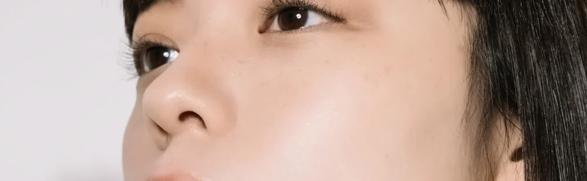
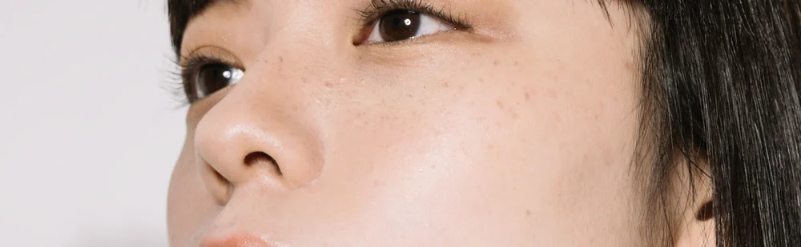
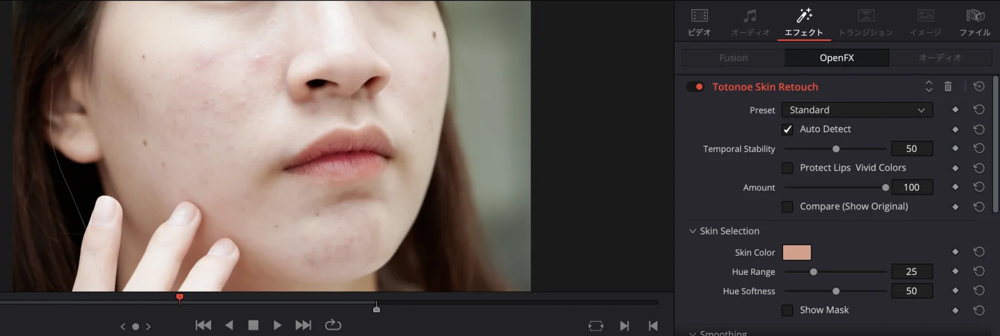

DAVINCI RESOLVE / MAC ONLY
Skin retouch plugin for DaVinci Resolve (Mac)
- Mac only. Windows is not supported
- ¥9,800 (about US$65), one-time purchase
- Free trial with a watermark
Totonoe Skin Retouch is an OpenFX plugin that detects skin by color and smooths it while keeping edges and texture (pores and fine skin detail). Apply it to a clip, pick a preset, and adjust Amount.
Payment is in Japanese yen on BOOTH, and your card company converts the amount. The free trial adds a watermark to the video.
This page is about the DaVinci Resolve version. The Premiere Pro / After Effects version is a separate product with a separate license. See the Premiere Pro / After Effects version


BEFORE AFTERDrag left or right to compare Before and After of the same photo, or use the arrow keys. The photo (PIXTA 87607206, model-released) was processed with the DaVinci Resolve version of Totonoe Skin Retouch and cropped to part of the face.
IN DAVINCI RESOLVE
What it looks like in the Inspector
The plugin appears as an OpenFX effect with its controls in the Inspector.

COMPATIBILITY
Does it work in the free version?
I checked it on the free version of DaVinci Resolve 20.3.2, on a Mac with Apple Silicon. That is the only setup I have tested.
- Checked: DaVinci Resolve (free version) 20.3.2, Mac with Apple Silicon.
- Not checked: DaVinci Resolve Studio, DaVinci Resolve 21, and an Intel Mac.
- Not supported: Windows.
If your setup is one of the unchecked ones, try the free trial first.
If you only want to use what is already in the free version of Resolve, see How to smooth skin in DaVinci Resolve (free version and Studio).
COMPARISON
Resolve Studio's face tools and Totonoe
DaVinci Resolve Studio has its own face and skin effects. This table puts them next to Totonoe so you can see how they differ. I have not used Studio. The Studio column comes from the DaVinci Resolve 21 Reference Manual and the official Studio page (checked November 14, 2026).
| Resolve Studio (Face Refinement, Beauty, Blemish Removal) | Totonoe Skin Retouch | |
|---|---|---|
| Resolve version | DaVinci Resolve Studio. The manual marks these ResolveFX as “Studio Version Only” | An OpenFX plugin. Checked on the free version, 20.3.2 |
| How skin is found | Face Refinement detects and tracks faces and builds a skin mask automatically. Beauty smooths detail above a certain size and keeps fine detail such as pores; its modes are Automatic, Advanced and Ultra Beauty. The manual suggests limiting its range with a qualifier or similar | By skin color. There is no face detection. Show Mask displays the detected area |
| Per-feature controls (eyes, lips, teeth…) | Face Refinement adjusts skin texture, eyes, lips, teeth, cheeks, forehead, chin and more, each separately | No per-feature controls. Smoothing, Texture, De-Shine, Blemish, Redness / Paleness, Temporal Stability and Show Mask act on the detected skin |
| Several people in a shot | When a shot has several faces, Face Refinement lets you choose the target | The effect applies to everyone with a similar skin tone. To limit it to one person, combine it with a Resolve window or mask |
| Status of testing | I have not used Studio. This column is based on the manual and the official site | Checked on the free version 20.3.2, Apple Silicon Mac. Studio, Resolve 21 and Intel Macs are not checked |
Sources: DaVinci Resolve 21 Reference Manual (PDF) and the official DaVinci Resolve Studio page, checked November 14, 2026.
How to choose
- If you already have Studio and want to adjust each face and each feature (eyes, lips, teeth and so on) separately, use Studio's tools.
- If you use the free version and want to even out skin while keeping its texture, Totonoe is an option.
Neither is better in every case. Try the free trial on your own footage to see which one fits.
HOW TO USE
How to use
-
Apply the effect to a clip
Open the Effects library, go to
OpenFX>Totonoe, and applySkin Retouchto a clip. -
Choose a preset
Pick Natural, Standard or Strong. If you are not sure, start with Standard.
-
Adjust Amount
Use the Amount slider to set the overall strength. Turn on Compare to check against the original.
PARAMETERS
Main parameters
You can start with just Preset and Amount. Use the parameters below when you want finer control.
- Preset
- Choose Natural, Standard or Strong.
- Amount
- Adjusts the overall strength of the effect.
- Compare
- When on, shows the video before processing. Switch it on and off to compare.
- Output Mix
- Sets how much of the processed video is mixed with the original.
- Temporal Stability
- Reduces flicker caused by the detected skin area changing from frame to frame.
- Auto Detect
- Detects skin color automatically. It is on by default.
- Smoothing
- Evens out skin roughness while keeping edges.
- Texture
- Sets how much of the pores and fine skin detail lost in smoothing is restored.
- De-Shine
- Reduces shine on the skin.
- Blemish
- Makes small spots and marks less noticeable.
- Redness / Paleness
- Redness raises or lowers skin redness. Paleness moves skin toward a lighter or a more tanned tone.
- Show Mask
- Shows the area detected as skin. Use it when adjusting Hue Range and similar settings.
Specific to the DaVinci Resolve version
- The viewer has no eyedropper for picking skin color. Set the color with the Skin Color control instead.
- Skin detection is based on color, so a background or prop with a skin-like color may also be detected. If that happens, narrow Hue Range and check the area with Show Mask.
- In color-managed HDR (wide gamut) projects, skin detection can get weaker.
REQUIREMENTS
Requirements and installation
Requirements
- OS
- macOS 13 or later. Windows is not supported
- CPU
- Universal Binary (Apple Silicon and Intel). Checked on Apple Silicon only; an Intel Mac has not been checked
- Host app
- DaVinci Resolve, as an OpenFX effect. Checked on the Edit page and in renders from the Deliver page
- Version checked
- DaVinci Resolve free version 20.3.2
Installation
- Installer
- A .pkg installer, notarized by Apple
- Location
- It installs into
/Library/OFX/Plugins, so you need an administrator password - After installing
- Restart DaVinci Resolve
DIFFERENT PRODUCT
This is not the Premiere Pro / After Effects version
Totonoe Skin Retouch comes as separate products for each editing app. The DaVinci Resolve version does not run in Premiere Pro or After Effects, and the Premiere Pro / After Effects version does not run in DaVinci Resolve. The licenses are sold separately.
PRICE AND LICENSE
Price and license
Totonoe Skin Retouch for DaVinci Resolve
One-time purchase (not a subscription). Payment is in Japanese yen on BOOTH, and your card company converts the amount.
- Mac only. The license is separate from the Premiere Pro / After Effects version
This is a download product on BOOTH, so purchases cannot be refunded except when the product is defective. Please test it with the free trial before you buy. The trial adds a watermark to the video.
FAQ
Frequently asked questions
Does it work in the free version of DaVinci Resolve?
I checked it on the free version of DaVinci Resolve 20.3.2 on a Mac with Apple Silicon. I have not checked DaVinci Resolve Studio, DaVinci Resolve 21 or an Intel Mac. The free trial lets you test it on your own setup before you buy.
Does it work in DaVinci Resolve Studio?
I have not checked it. I only checked the free version of DaVinci Resolve 20.3.2. Try the free trial on your own setup first.
Does it work on Windows?
No. The DaVinci Resolve version is Mac only, and Windows is not supported.
I own the Premiere Pro / After Effects version. Does its license key work here?
No. The DaVinci Resolve version is a separate product and its license is sold separately. A Premiere Pro / After Effects key does not activate it.
What happens when there are several people in the shot?
The plugin finds skin by color and has no face detection, so the effect is applied to everyone with a similar skin tone. To apply it to only one person, combine it with a window or mask in DaVinci Resolve.
Is support available in English?
Yes. Send a message through BOOTH. You can write in English or Japanese.
Developed by an editor who works on music videos, interviews and commercials.
More: Premiere Pro / After Effects version · Guide: smoothing skin in DaVinci Resolve · BOOTH shop
Try it on your own footage first
The free trial adds a watermark to the video. Apply the effect, choose a preset and adjust Amount before you buy.